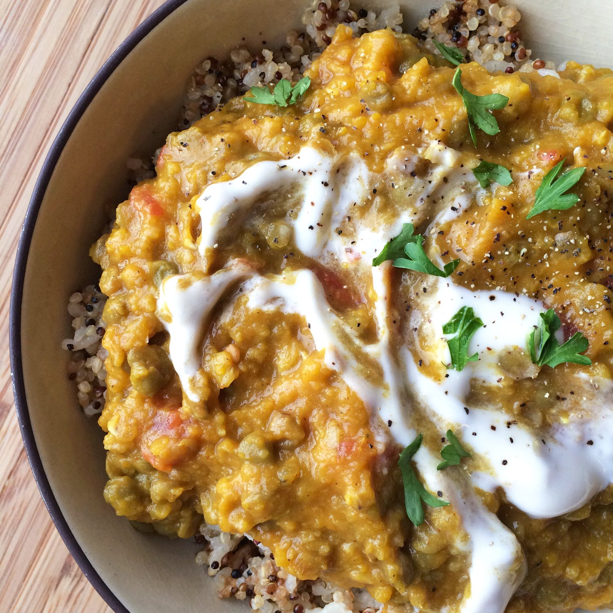
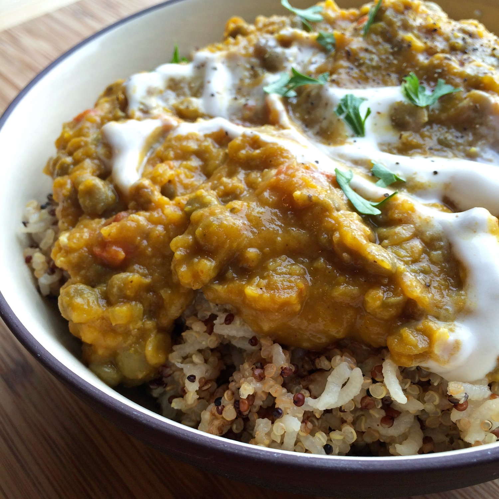
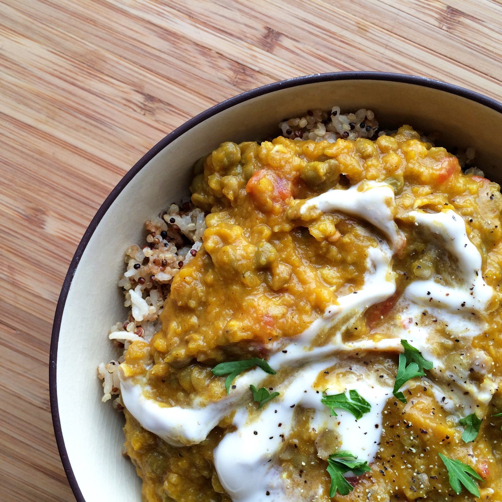

Kabocha Lentil Curry (vegan, gluten free)
MMM yes. Lentils. My new best friend.
I swear that every time I used to make lentils when I first started eating healthy, they always sucked so much. They ended up firm and tasting like dirt every time. But now they're delicious? I don't know what changed, but I won't question it! They're so filling and can add bulk and protein to a meal easy peasy.
I saw this original recipe on Pinch of Yum and just about drooled in my own lap when I saw it. Kabocha? Curry? Sign me uppppp. This was so easy to make and SMELLS SO GOOD. I actually ran out of lentils mid-way through and had to run to the store to get more. When I went to open the front door, the entire area around the house emitted yummy yummy curry smells. So much comfort.


This Wednesday/Thursday I was supposed to go on a trip with Andrew and his friend Andrew (fun, huh?) to some hot springs in Montana! We were going to take the dogs (mine and the friend's dog) too, hike up in snowy mountains, then enjoy the hot springs. Buutttt.. the conditions were a bit rougher than we assumed and we didn't want to risk it. Plus, since I'm new to the northwest, I don't really have hiking gear or boots? So. I basically would've died. Basically. Anyways - instead, we went about 1.5 hours out to go rock climbing with a brief hike to the area. We still got to take the dogs and have fun. :) I loved it. It was the first time I trusted Pesto off the leash, and he did great! His little body couldn't handle the 50F weather though, even with his sweater on D; But it was so so relaxing and much needed.
And now we're back! Always feels good to be home. I've been binging on American Horror Story. I never watched it before, but decided to give it a go. And yes. So much yes. I skipped season 3 but I'm already on season 5, ha. Who let me go so long without AHS in my life?!
Kabocha Lentil Curry (vegan, gluten free)
Serves: 8
Adapted from Pinch of Yum
-
1.5 cups dry brown lentils
-
4-5 cups peeled, cubed kabocha squash (1 lb total)
-
1 large yellow onion, roughly chopped
-
1 TBSP olive oil
-
2 cups vegetable broth (or water)
-
1 TBSP curry paste
-
2 tsp curry powder
-
1/2 tsp cumin
-
1 tsp salt
-
1/2 tsp cayenne pepper (for mild-medium spice)
-
1/4 tsp cinnamon
-
1/2 cup canned coconut milk
-
1 can diced tomatoes (1.75 cups total)
-
rice/quinoa for serving
Boil a pot of water. Rinse your dry lentils and add them to the boiling water. Let boil for 20-30 minutes until the lentils are tender (but not overly boiled & mushy!). Strain the lentils from the water and allow to dry.
In a large skillet over medium heat, heat your olive oil. Add the chopped onion and sautee until lightly browned. Add the cubed raw squash and vegetable broth - if the liquid level does not completely cover the squash, add more broth or water to cover. Let simmer for 10 minutes or until the squash is soft. Transfer the cooked mixture to a food processor and blend until smooth. Return the blended mixture to the pan and add the curry paste, curry powder, cumin, salt, cayenne, cinnamon, and coconut milk. Mix together until smooth and creamy. I used green curry paste, but any curry paste you prefer is fine! A red curry paste would be great.
Add the previously cooked lentils and diced tomatoes. Let everything simmer together for 10 more minutes and serve over rice or quinoa. I served mine with a 1:1 mix of white rice and quinoa, but I bet this would be great with just rice. I topped mine with some dairy-free sour cream, but more coconut milk or dairy-free yogurt would be fantastic.
Nutrition info for one serving: 150 calories; 4 g fat, 30 g carbs (13 g fiber), and 8 g protein
